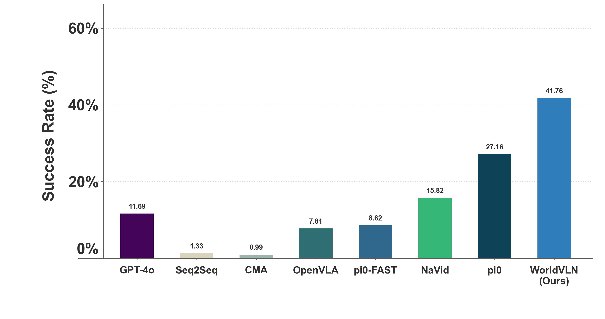
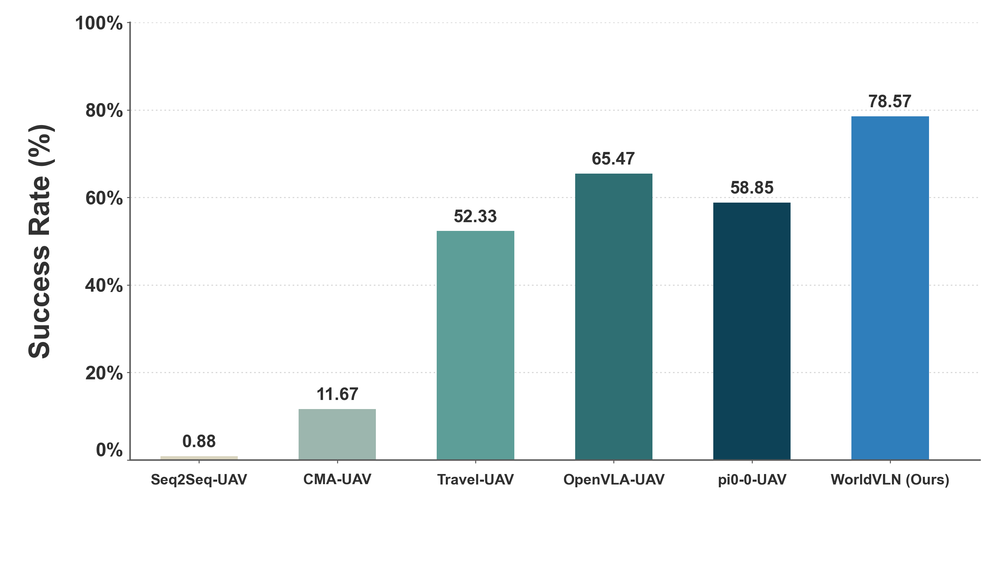
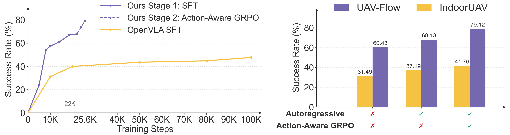

01
Autoregressive WAM for Aerial VLN
We propose the first autoregressive world action model for aerial VLN, grounded in a closed-loop observe-act-update process.
We propose the first autoregressive world action model for aerial VLN, grounded in a closed-loop observe-act-update process.
We introduce the first action-aware GRPO to boost the action ability of autoregressive WAMs.
WorldVLN achieves strong performance on indoor and outdoor benchmarks and transfers to real-world drone deployment.
Aerial vision-language navigation requires agents to follow natural-language instructions through closed-loop perception and action in 3D environments. We argue that aerial VLN can be formulated as a prediction-driven world-action problem: the agent should anticipate latent world evolution and act according to the predicted consequences. To this end, we propose WorldVLN, the first autoregressive world action model for aerial VLN. Unlike full-sequence video-generation world models that generate an entire visual clip, WorldVLN adapts a latent autoregressive video backbone to predict short-horizon world-state transitions and directly decodes them into executable waypoint actions. After each action segment is executed, newly received observations are encoded back into the autoregressive context, enabling closed-loop world-action prediction. We further introduce a two-stage training framework that first grounds the video prior in instruction-conditioned navigation dynamics and then develops Action-aware GRPO, the first reinforcement learning method tailored to autoregressive WAMs, to optimize waypoint decisions through their downstream rollout consequences. On public outdoor and indoor benchmarks, WorldVLN consistently outperforms existing Vision-Language-Action baselines with 12%+ success-rate gains and larger advantages on challenging cases. It further transfers zero-shot to real drone deployment, suggesting that the proposed WorldVLN offers a promising route for spatial action tasks.
Videos
WorldVLN navigates by implicitly predicting what will happen next, acting on it, and continuously correcting itself with real visual feedback.
We train the autoregressive WAM in two stages. Stage 1 supervises the latent autoregressive backbone with instruction-video pairs and the action decoder with video-trajectory pairs. Stage 2 samples multiple rollouts, assigns segment-level rewards from trajectory accuracy, task progress, and reference-policy regularization with temporal decay weighting, and updates WorldVLN through Action-aware GRPO.

The quantitative results demonstrate the strong performance of WorldVLN across both outdoor and indoor UAV benchmarks.


We plot the training curves of the proposed model:
